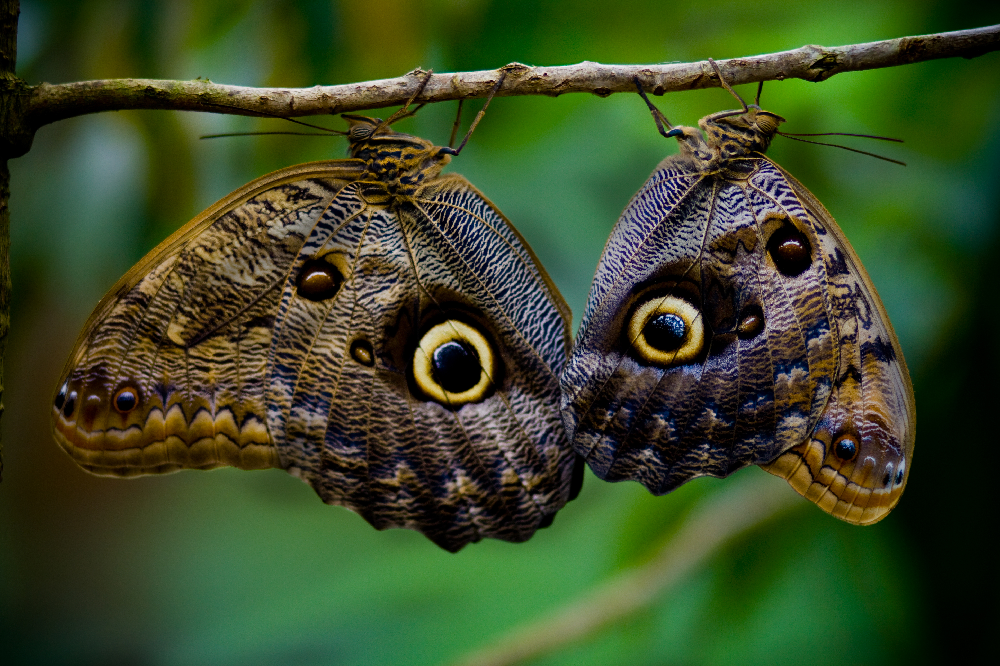

Las grandes manchas de sus alas parecen ojos de búho y pueden intimidar a sus depredadores.
Las mariposas del género Caligo son grandes y suelen descansar durante el día. Los adultos buscan frutos maduros o fermentados para alimentarse.
Habita en las selvas de Centroamérica y Sudamérica.
¿Cómo se protege?
El patrón de sus alas imita los ojos de un búho; al desplegarlas, la mariposa puede sorprender o asustar a quien intenta atacarla.
Sentidos
